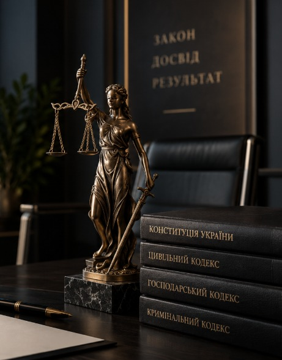

Онлайн-офіс · Куп'янськ, Вовчанськ, Харківська область
Допомагаємо власникам відновити документи на нерухомість у Куп'янську, Вовчанську та по всій Харківській області — навіть коли архіви БТІ знищено, а первинних паперів немає.

Відновлюємо права власності навіть за відсутності паперових оригіналів.
Повний супровід заявки на компенсацію за знищене або пошкоджене житло.
Пришвидшене внесення даних у реєстр там, де це має значення для клієнта.
Вартість обговорюємо до початку роботи — без прихованих платежів.
П'ять напрямів, зосереджених на відновленні прав власності та сімейному праві.
Куп'янськ, Вовчанськ, Харківська область. Відновлення права власності за відсутності або знищення архівів БТІ.
Детальніше →Повна підготовка документів для компенсації за знищене або пошкоджене житло та отримання житлових сертифікатів.
Детальніше →Технічні паспорти, введення в експлуатацію та узаконення самочинного будівництва і перепланувань.
Детальніше →Реєстрація будь-якої складності: втрачені документи, непереоформлена спадщина, відсутні записи в реєстрах.
Детальніше →Розлучення під ключ, дистанційний супровід, поділ майна, аліменти та встановлення прав власності.
Детальніше →Чотири принципи, яких дотримується кожен партнер фірми в кожній справі.
Справу веде партнер, а не команда молодших юристів — він же відповідає за результат і завжди на зв'язку.
Ми говоримо прямо, якщо шанси на успіх низькі, — навіть якщо це означає відмову від справи.
Погоджуємо бюджет до старту роботи. Про додаткові витрати повідомляємо заздалегідь і письмово.
Кожен файл справи захищений на рівні внутрішнього регламенту фірми та угоди про нерозголошення.